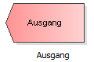

Genau so, wie der Weg eines Kunden durch das Warteschlangensystem stets an einer Quelle beginnt, endet es stets an einem Ausgang. Alle Kundenströme müssen letztendlich mit einem Ausgang verbunden werden.
Um ein Element - in diesem Fall einen Ausgang - in dem Modell hinzuzufügen, ziehen Sie diese mit gedrückter linker Maustaste auf die Zeichenfläche.
Ziehen Sie dieses Element aus der Vorlagenleiste links auf die Zeichenfläche:
